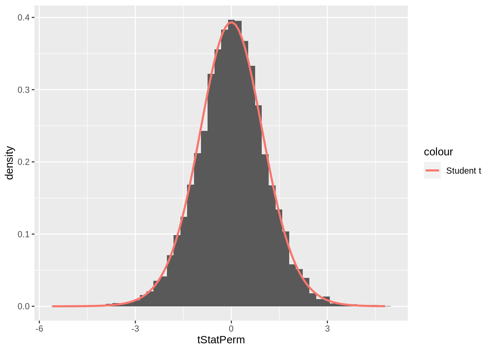
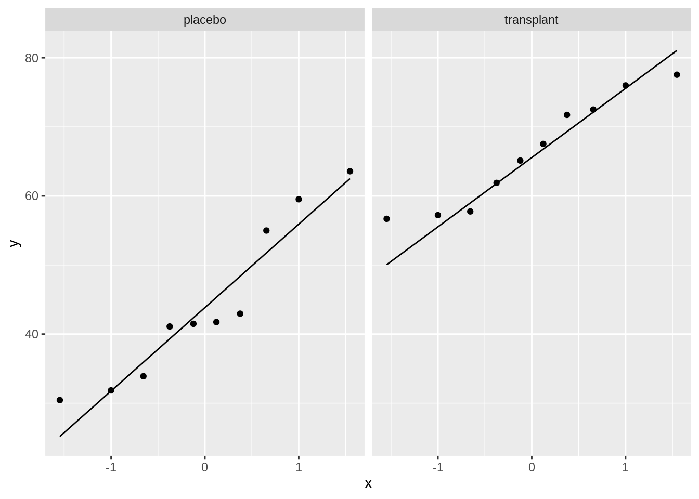

1. Introduction: two group comparisons
Lieven Clement
statOmics, Ghent University (https://statomics.github.io)
1 Learning objectives
- In this introduction you will familiarize yourself with three important tasks of statistics
- Experimental design
- Data Exploration
- Estimation and statistical inference
- You understand how the data, the estimated mean, standard deviation and conclusions of a statistical data analysis can change from experiment to experiment
2 Smelly armpit example
Smelly armpits are not caused by sweat itself. The smell is caused by specific micro-organisms belonging to the group of Corynebacterium spp. that metabolise sweat. Another group of abundant bacteria are the Staphylococcus spp., these bacteria do not metabolise sweat in smelly compounds.
The CMET-groep at Ghent University does research on transplanting the armpit microbiome to save people with smelly armpits.
Proposed Therapy:
- Remove armpit-microbiome with antibiotics
- Influence armpit microbiome with microbial transplant (https://youtu.be/9RIFyqLXdVw)

Experiment:
- 20 subjects with smelly armpits are attributed to one of two treatment groups
- placebo (only antibiotics)
- transplant (antibiotics followed by microbial transplant).
- The microbiome is sampled 6 weeks upon the treatment.
- The relative abundance of Staphylococcus spp. on Corynebacterium spp. + Staphylococcus spp. in the microbiome is measured via DGGE (Denaturing Gradient Gel Electrophoresis).
2.1 Import the data
read_lines("https://raw.githubusercontent.com/GTPB/PSLS20/master/data/armpit.csv") [1] "trt,rel" "placebo,54.99207606973059"
[3] "placebo,31.84466019417476" "placebo,41.09947643979057"
[5] "placebo,59.52063914780293" "placebo,63.573407202216075"
[7] "placebo,41.48648648648649" "placebo,30.44041450777202"
[9] "placebo,42.95676429567643" "placebo,41.7391304347826"
[11] "placebo,33.896515311510036" "transplant,57.218124341412015"
[13] "transplant,72.50900360144058" "transplant,61.89258312020461"
[15] "transplant,56.690140845070424" "transplant,76"
[17] "transplant,71.7357910906298" "transplant,57.757296466973884"
[19] "transplant,65.1219512195122" "transplant,67.53424657534246"
[21] "transplant,77.55359394703657" The file is comma separated and in tidy format
ap <- read_csv("https://raw.githubusercontent.com/GTPB/PSLS20/master/data/armpit.csv")
ap2.2 Data Exploration and Descriptive Statistics
- Data exploration is extremely important to get insight in the data.
- It is often underrated and overlooked.
2.2.1 Descriptive statistics
We first summarize the data and calculate the mean, standard deviation, number of observations and standard error and store the result in an object apRelSum via apRelSum<-
- We pipe the
apdataframe to the group_by function to group the data by treatment trtgroup_by(trt) - We pipe the result to the
summarizefunction to summarize the “rel” variable and calculate the mean, standard deviation and the number of observations - We pipe the result to the
mutatefunction to make a new variable in the data framesefor which we calculate the standard error
apRelSum <- ap %>%
group_by(trt) %>%
summarize(
mean = mean(rel, na.rm = TRUE),
sd = sd(rel, na.rm = TRUE),
n = n()
) %>%
mutate(se = sd / sqrt(n))
apRelSum2.2.2 Plots
We will use ggplot2 to make our plots. With the ggplot2 library we can easily build plots by adding layers.
We will now make a boxplot for the ap data
- We pipe the
apdataframe to the ggplot command - We select the data with the command
ggplot(aes(x=trt,y=rel)) - We add a boxplot with the command
geom_boxplot(outlier.shape = NA). We use the argumentoutlier.shape = NAbecause we will also add the raw data to the plot and otherwise outliers will be shown twice - We add the raw data using geom_point(position=“jitter”), with the argument position=‘jitter’ we will add some random noise to the x coordinate so that we can see all data.
ap %>%
ggplot(aes(x = trt, y = rel)) +
geom_boxplot(outlier.shape = NA) +
geom_point(position = "jitter")
Note, that we do not have so many observations.
It is always better to show the data as raw as possible!
We observed an effect of the transplantation on the relative abundance of Staphylococcus.
On average the relative relative abundance of Staphylococcus is 22.2% higher in the transplant group than in the placebo group.
apRelSum %>%
pull(mean) %>%
diff %>%
round(1)[1] 22.2- Is that effect large enough to conclude that the treatment works?
2.3 Estimation and statistical inference
Induction: With statistical inference we can generalize what we observe in the sample towards the population.
The price that we have to pay: uncertainty on our conclusions!
Indeed, we could not assess the effect of the treatment in the entire population but only on a small subset of the population
So if we would repeat the experiment again
- we will select different people at random from the population
- the observed relative abundances will be slightly different
- the group means will be slightly different
- and that might result in different conclusions.
With statistics we will control the probability to make false positive conclusions
With experimental design we can determine the power to pick up an effect with a certain minimum effect size
Falsification principle of Popper
With data we cannot prove that the treatment works
With data we can only reject a hypothesis or theory.
With stats we can thus not prove that the treatment works.
But stats will allow us to falcify the opposite hypothesis: how much evidence is there in the data against the assumption that there is no effect of the treatment?
If there is no effect of the treatment
then the relative abundance would follow the same distribution in both treatment arms
we could thus have observed each observation in one of the groups.
So under the null hypothesis of no effect we can permute the group labels.
apPerm <- ap %>% mutate(trt=sample(trt))
apPerm %>% ggplot(aes(x = trt, y = rel)) +
geom_boxplot(outlier.shape = NA) +
geom_point(position = "jitter")apRelSumPerm <- apPerm %>%
group_by(trt) %>%
summarize(
mean = mean(rel, na.rm = TRUE),
sd = sd(rel, na.rm = TRUE),
n = n()
) %>%
mutate(se = sd / sqrt(n))
apRelSumPermapRelSumPerm %>% pull(mean) %>% diff[1] 3.641594We can repeat this again.
apPerm <- ap %>% mutate(trt=sample(trt))
apPerm %>% ggplot(aes(x = trt, y = rel)) +
geom_boxplot(outlier.shape = NA) +
geom_point(position = "jitter")apRelSumPerm <- apPerm %>%
group_by(trt) %>%
summarize(
mean = mean(rel, na.rm = TRUE),
sd = sd(rel, na.rm = TRUE),
n = n()
) %>%
mutate(se = sd / sqrt(n))
apRelSumPermapRelSumPerm %>% pull(mean) %>% diff[1] 4.860905If we do that many times we can estimate the distribution of average difference in relative abundance between both treatment groups under the assumption that there is no effect of the treatment on the relative abundance of staphylococcus
i.e. under the assumption that the relative abundances follow the same distribution in both groups
set.seed(1025)
nPerm <- 10000
diff <- tStatPerm <- array(NA,nPerm)
for (i in 1:nPerm)
{
apPerm <- ap %>% mutate(trt=sample(trt))
apRelSumPerm <- apPerm %>% group_by(trt) %>%
summarize(
mean = mean(rel, na.rm = TRUE),
sd = sd(rel, na.rm = TRUE),
n = n()
)
diff[i] <- apRelSumPerm %>% pull(mean) %>% diff
seDiff <- sqrt(sum((apRelSumPerm$sd^2*(apRelSumPerm$n-1)))/sum(apRelSumPerm$n-1))*sqrt(sum(1/apRelSumPerm$n))
tStatPerm[i] <- diff[i]/seDiff
}qplot(diff,geom="histogram", bins=50) +
geom_vline(xintercept= apRelSum %>% pull(mean) %>% diff)mean(abs(diff) >= abs(apRelSum %>% pull(mean) %>% diff))[1] 1e-04The permutations show that it is very unlikely to observe a difference in relative abundance of at least 22.2 by random chance if their would be no effect of the treatment.
Only in 1 out of 10^{4} permutations we observe a difference that is at least as high as what we observed in our sample.
So it is very unlikely to observe our dataset under the hypothesis that their is no effect of the treatment.
We can thus conclude that there is an effect of the transplantation treatment on the relative abundance of staphylococcus in the armpit microbiome.
In statistics we typically do not only look at the effect size: average difference in relative abundance between transplant and treatment group
But we generally balance the effect size to its standard error, which is a measure for the uncertainty of the effect size estimate.
\[ T = \frac{\hat\Delta}{\text{se}_{\hat\Delta}}=\frac{\bar Y_t - \bar Y_p}{\text{se}_{\bar Y_t - \bar Y_p}} \]
We can again look at the permutation distribution of this t-test statistic:
data_frame(tStatPerm=tStatPerm) %>%
ggplot(aes(x=tStatPerm)) +
geom_histogram(aes(y=..density..),bins=50) +
stat_function(fun = dt, args=list(df=sum(apRelSum$n-1)),
aes(colour = 'Student t'), lwd=1)
If we compare it with a standard t-distribution with 18 degrees of freedom we observe that the permutation distribution nicely follows a t-distribution.
This is because the data are approximately Normally distributed and because the variance in the two groups (j= 1, 2) are equal, i.e.
\[ Y_{ij} \sim N(\mu_j,\sigma^2) \] and because the standard deviation is unknown and has to be estimated based on the data. Then the t-statistic follows a t-distribution with \(n_1 + n_2 -2\) degrees of freedom because we had to estimate the two sample means to estimate the standard deviation of the original observations.
We could verify the distributional assumptions using the boxplot and qqplots
ap %>%
ggplot(aes(x = trt, y = rel)) +
geom_boxplot(outlier.shape = NA) +
geom_point(position = "jitter")ap %>% ggplot(aes(sample = rel)) +
geom_qq() +
geom_qq_line() +
facet_wrap(~trt)
Note, that under these assumptions the distribution of the two groups can only differ according to the group mean.
So we can interpret the null and alternative hypothesis in terms of a difference in group means.
\[ H_0: \mu_1= \mu_2 \text{ vs } H_1: \mu_1 \neq \mu_2 \]
and we can calculate the probability
- to observe an average difference in relative abundance of Staphylococcus between the placebo and the transplant group
- in a random experiment of the same size as ours
- under null hypothesis that there is on no effect of the treatment treatment using a two sample t-test.
t.test(rel~trt,ap,var.equal=TRUE)
Two Sample t-test
data: rel by trt
t = -5.0334, df = 18, p-value = 8.638e-05
alternative hypothesis: true difference in means between group placebo and group transplant is not equal to 0
95 percent confidence interval:
-31.53191 -12.96072
sample estimates:
mean in group placebo mean in group transplant
44.15496 66.40127 So if we would repeat our experiment one million times we can expect in about 86 experiments an average difference in relative abundance of staphylococcus between the transplant and placebo group that is larger 22.2% by random change under the assumptions that
- there is no effect of the treatment
- the data are normally distributed
- the data in both groups have the same variance
This shows that it is extremely unlikely to observe an effect size as large as what we observed in our sample by random change in an experiment like ours if their would be no effect of the treatment.
Because we did the assumption that the data are normally distributed in both groups and have the same variance, we can conclude about the effect in terms of a difference in means between both groups!
Note, that we typically refer to this probability as
p-valueAnd that we typically reject \(H_0\) if \(p<\alpha\) with \(\alpha\) the significance level.
We often use \(\alpha = 0.05\) so we tolerate a 5% probability on making a false positive conclusion, i.e. to conclude that there is an effect of the treatment while this is not the case.
This is also referred to as the control of the Type I error (false positive conclusion) at the 5%-level.
We can now formulate our conclusion
2.4 Conclusion
The relative abundance of Staphylococcus in the microbiome of individuals with smelly armpits is 22.2% higher upon the transplant than upon the placebo treatment (p << 0.001).
3 t and z-statistics
Note, that we often use t-statistics or z-statistics, which are signal to noise ratio’s.
\[t = \frac{\text{effect size}}{\text{se}_\text{effect size}}\]
3.1 Critical difference
Do sequential laboratory results \((Y_1, Y_2)\) of a patient indicate that there is a true change in measured characteristic of the patient (\(H_1: \mu_1 \neq \mu_2\))?
We can assess that with a z-statistic that quantifies the signal to noise ratio
\[ z = \frac{Y_2-Y_1}{\text{se}_{Y_2-Y_1}} \]
Under the null hypothesis \[H_0: \mu_1 = \mu_2 = \mu\] Upon making the additional assumptions that the measurements are
- independent
- normally distributed
- with the same variance \(\sigma^2\)
we know the distribution of \(Y_1, Y_2\) under \(H_0\):
\[Y_1, Y_2 \stackrel{H_0}{\sim} N(\mu, \sigma^2)\]
and that:
\[ z = \frac{Y_2-Y_1}{\text{se}_{Y_2-Y_1}}=\frac{Y_2-Y_1}{\sqrt{2 \sigma^2}} \stackrel{H_0}{\sim} N(0,1)\]
If we know the analytical and within patient coefficient of variation
\[\frac{\sigma}{\mu} = \sqrt{CV_a^2 + CV_i^2}\] \[ z = \frac{Y_2-Y_1}{ \sqrt{2} \mu\sqrt{CV^2_a+CV^2_i}} \stackrel{H_0}{\sim} N(0,1)\] If \(\mu\) is unknown it is often replaced by \(Y_1\).